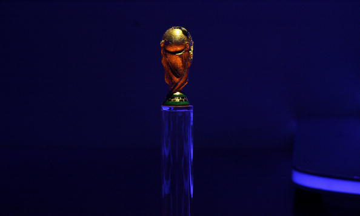
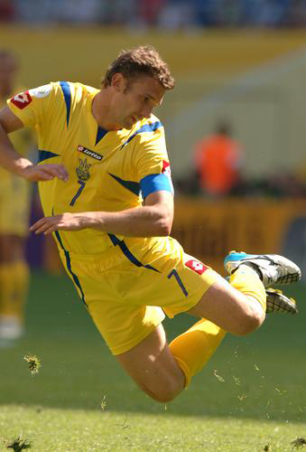
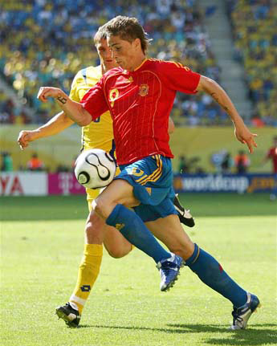
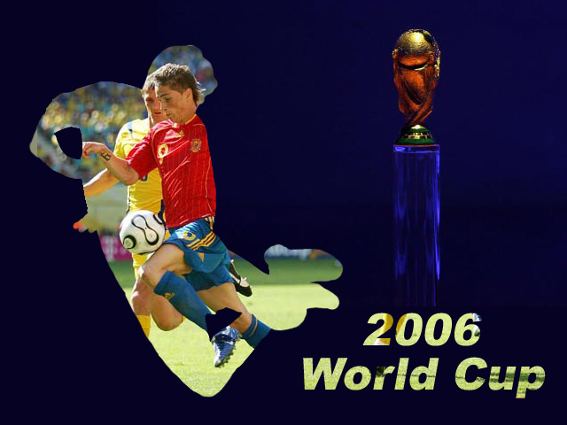

[要求]
在Photoshop CS2中打开“大力神杯”、“跳跃”、“争抢”和“效果图”图像，观察效果图，按照提示编辑图像，直至达到最终效果（取跳跃运动员的轮廓作为争抢运动员的透视范围），务必将结果以psd格式保存。
[提示]
（1）选择“大力神杯”图像，用吸管工具选择图像边缘的颜色作为背景色，将除了大力神杯以外的区域填充为背景色。
（2）将画布扩大为640×480像素，并将大力神杯的位置向右稍做调整。
（3）将“跳跃”图像拖拽过来，命名新图层为“跳跃”，用相应选择工具将人物选取，并反向去掉“跳跃”层背景。
（4）将“争抢”图像拖拽过来，命名新图层为“争抢”。将“争抢”层复制，命名新图层为“争抢1”，调整两个争抢图层的位置，使其布满整个图像。（“争抢1”层在左，“争抢”层在右）
（5）在图层调板中将“跳跃”层移动到两个争抢层中间，在“争抢1”和“跳跃”层中间的位置，按住Alt键单击鼠标，建立剪贴蒙版。
（6）使用文字工具创建文本层，输入文字，调整位置及大小，使其位于图像右侧。在图层调板中将文本层移动到背景层上面，按住Alt键在文本层和“争抢”层中间单击鼠标，建立剪贴蒙版。
（7）将图像以psd格式保存。
大力神杯
跳跃
争抢
效果图
